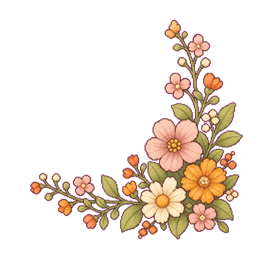
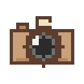
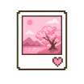

到「設定 → Safari →（或此 App）→ 相機」選擇允許，然後回來按重試。

今天還沒有片段
到「拍攝」按一下紅色鈕，錄下今天的第一個 2 秒。相簿裡的照片或影片，也可以按右上角「匯入」。
v61
版本 v61
這天沒有片段。


拖滑桿選起點，上面會重複播放選到的 2 秒；確認後才會匯入。
準備中…
完成！
裝好之後從主畫面打開，會是全螢幕、沒有網址列。
二、影片記得存相簿片段都存在這支手機裡，生成的影片記得按「儲存到相簿」，換手機或清瀏覽器資料時才不會不見。